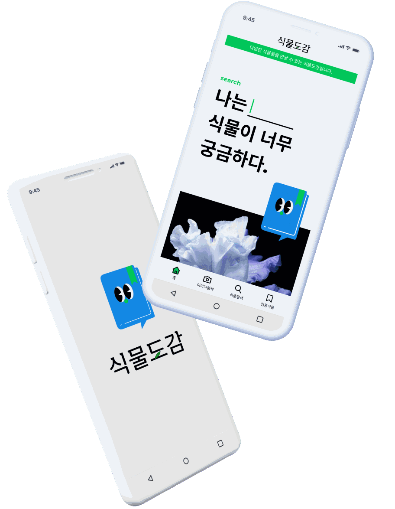

식물도감
UXUI RENEWAL DESIGN
식물도감은 산림청 국립수목원에서 데이터를 제공받아 식물자원의 항목별 정보 및 상세정보를 조회할 수 있는 앱입니다.
식물도감은 좋은 컨텐츠를 갖추고 있음에도 사용자의 편의를 고려하지 않은 UXUI 디자인으로 사용도가 낮은 문제점을 발견하여
이를 개선할 수 있도록 가시성과 편의성을 키워드로 선택하여 리뉴얼을 진행했습니다.
담당업무
- 팀리더
- 캐릭터
- 와이어프레임
- 홈화면
- 완료보고서 작성
research
background
빵 덕후의 온라인 성지순례
식집사, 식테크 등 신조어 등장
식물 검색량 증가
식물 판매량 증가
식물 관련 컨텐츠 증가
TARGET
20대 이상 성인 남녀
안드로이드 기준
네이버 3개월간 ‘식물’ 검색량 평균
20~40대: 65.58%
50대 이상: 62.30%
market research
아이덴티티 뚜렷한 경쟁앱
식물 관련 앱의 공통적인 강점
픽토그램, 인포그래픽을 활용하여
정보를 쉽게 전달
사용자 니즈
-
1
식물에 대한빠르고 정확한 검색
-
2
관심 식물즐겨찾기
-
3
정확한 콘텐츠가 있는한국어버전 앱
식물도감 기존 UXUI
- 검색방법 미흡
- 가독성 떨어짐
- 즐겨찾기 기능 없음
Quality up
검색기능 강화
명확한 주제, 희귀식물 포함하여 사진을
제공하고 있는 식물도감의 장점을
살리기 위해 편리한 검색기능 추가 필요
Brand renew
식물도감 브랜딩
사용자들의 선택을 받기위해서
식물도감의 브랜딩이 필요하다고 판단
image renew
브랜드에 가치를 더하는 이미지
새롭게 정립된 브랜드 이미지를
사용자에게 알리고 타앱과의 차별성을
위해 식물도감의 이미지 필요
*식물도감 앱을 제작업체에 연락하여 브랜딩에 대한 허락을 받고 진행했습니다.
UX vision
누구나 쉽고 빠르게 식물을 찾는검색 서비스
Style Guide
Logo
식물도감을 직관적으로 보여줄 수 있는 나뭇잎을 포인트로 깔끔하고 단아한 느낌으로 작업했습니다.
Character
북마크 기능을 가진 식물에 대한 정보를 주는 식물도감을 직관적으로 보여주면서 누구나 쉽게 사용할 수 있는 앱을 표현하기 위해 모서리를 둥글게 처리하여 친근한 느낌으로 표현했습니다.
캐릭터의 이름은 Mr. 도감입니다.
책 + 말주머니 + 북마크의
형태로 만들었습니다.
Color Palette
식물을 직관적으로 표현해주는 초록색상과 식물의 식물이 좋아하는 물을 대표하는 파랑색상을 포인트 컬러로 선택했습니다.
Layout grid
상단 상태 표시 24px / 상단 앱 바 56px 기존 하단 네비게이션바 : 48px에서 58px로 변경하여 편의성 확장
4columns / grid 8px
Margin 16px / Gutter 16px
Typography
Montserrat
Noto Sans
PUBLISHINGPROBLOEM & SOLUTION
Probloem

헤더 영역 position:sticky 적용이 잘 되다가 사라지는 문제 발생.
-
공지사항을 글자가 옆으로 이동하는 형태로 만들어주고 싶어서 어떤 방법으로 진행해야할지 고민.
-
모바일, 테블릿, PC 버젼으로 Break Point를 만들어 연결했으나 사이즈별 대응이 어색해 보임.
-
a태그 활성화 되지 않음.
Solution
-
sticky가 속한 영역에서만 작동하는 특성이 있다는 것을 이해하고 전체 큰영역을 만들어서 해결.
-
css 애니메이션으로 transform: translateX 값과 시간을 조정하여 움직임을 만들어 주었음.
-
Break Point(390px, 440px, 780px, 1200px)를 4번 만들어 최대한 대응이 될 수 있도록 연결.
-
다른 컨텐츠에 가려져서 a태그가 보여도 선택이 되지 않았던 것! z-index으로 우선순위 높여 해결.
uxui renewal design
식물도감
누구나 식물을 쉽고 친숙하게, 내 손안의 식물 도감이란 슬로건으로 궁금한 식물을 검색할 수 있는 어플입니다. 20대부터 50대이상까지 다양한 연령층이 사용함에 따라 가시성과 편의성에 중점을 두고 리뉴얼 디자인을 진행했습니다.
PROJECT팀 프로젝트
작업일정2023.05.03 ~ 2023.05.31
KEYWORD#가시성 #편의성
- Skills
- figma 공동 작업 / 프로토타입 제작 / 와이어 프레임 제작
- illustration / gif / Editing picture
- Tools
-